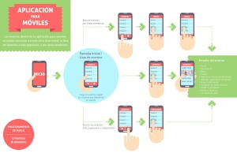
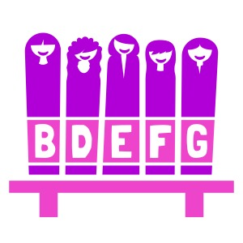

El portafolio de Miler.
El portafolio de Miler.
El portafolio
de Miler.
Algo de lo que he hecho de web, foto, ilustración y otras cositas.
Algo de lo que he hecho en
diseño web
.
Algo de lo que he hecho en
fotografía
.
Algo de lo que he hecho en
ilustración
.
Algunas
otras cositas
que he diseñado.
Todos
Web
Foto
Ilustración
Otros

